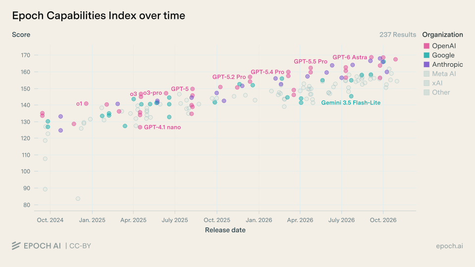

Les éditeurs annoncent, ces sites vérifient. Trois observatoires indépendants pour savoir, entre deux éditions, qui mène vraiment.
Compare les modèles de langage, d'image, de vidéo et de voix sur trois axes : intelligence, vitesse et prix.
À consulter pour choisir un modèle, ou vérifier qu'un « nouveau champion » l'est vraiment.
Fusionne des dizaines de benchmarks en un seul indice de capacité, suivi dans le temps.
À consulter pour voir la vitesse du progrès, et qui accélère ou décroche.

Détecte votre carte graphique ou votre Mac et liste les modèles ouverts qui tournent en local sur votre machine.
À consulter avant d'installer une IA sur son propre ordinateur.